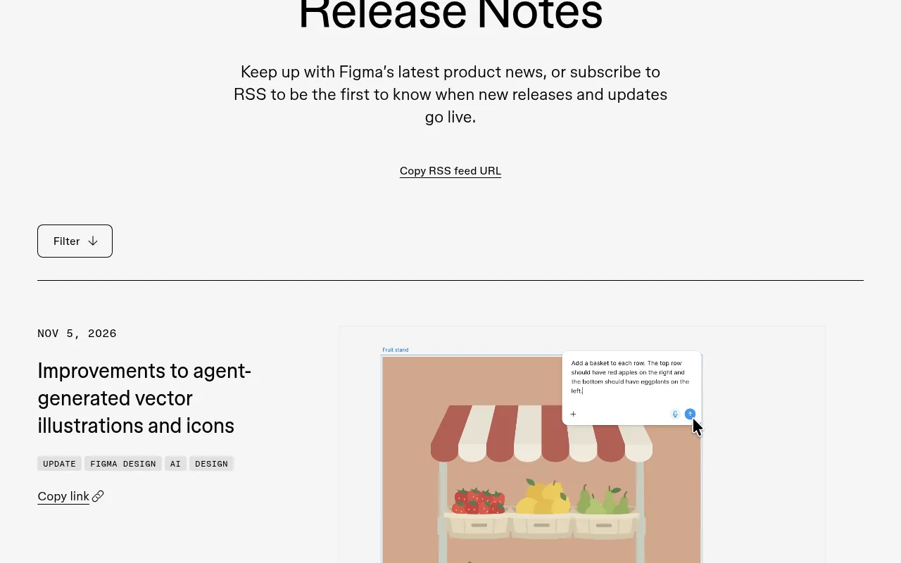
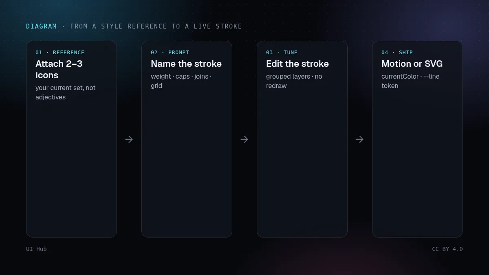
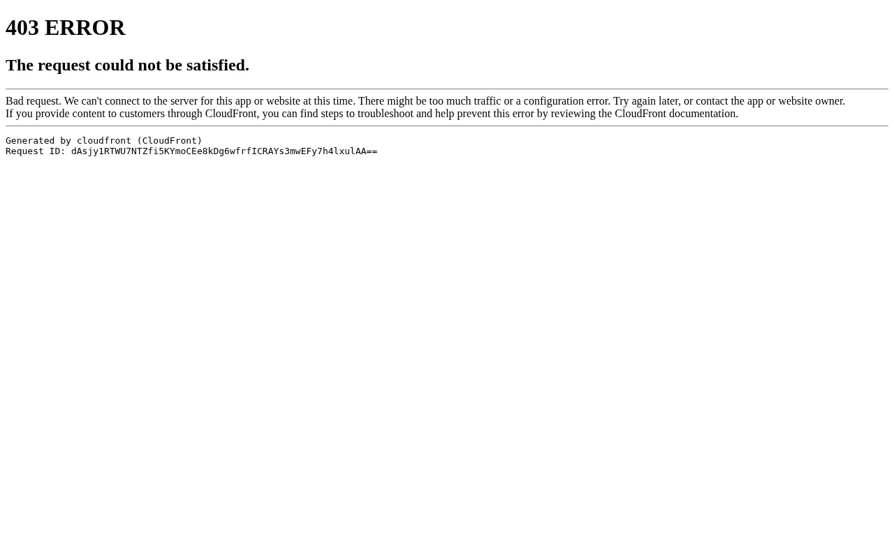

2026 年 11 月 5 日，Figma 的更新日志写了一条看起来不大、但对做图标的人很有用的改动：智能体生成的矢量插画和图标更容易编辑、对齐风格，也更容易做动画。四个细节对「接手过一套没法改完的 AI 图标」的人都重要：按功能分组的图层、可挂上的风格参考、线条用描边而不是填色轮廓，以及干净到适合 Figma Motion 的图层树。

这和「AI 画了一张好看的图」不是一回事。填色轮廓把线宽烤进了形状里；描边则把线宽和端点样式留成设置，以后还能拖，不用重画。Figma 帮助中心也写明：智能体可以根据提示或参考图生成插画和图标集，带可编辑的描边与填色、条理清楚的图层，并且你可以看着它们在画布上实时长出来。

同一周，Figma 还用工作流实验把代码图层推进了开放测试（11 月 4 日），并更早把着色器导出提到 4096 像素、带进代码图层（11 月 2 日）。矢量、动效和代码在同一张画布上汇合；这篇只谈矢量这一侧。
真正有用的单位不是「一张插画」，而是一个还可编辑的线条决定。多数提示生成图像的工具，最后给你的是位图或已经压扁的 SVG——看着对，直到你要在 2 px 图标旁边放一根 1.5 px 的发丝线。用描边画，等于把决定留回文件里。把这个决定一直留到上线：导出带真实 stroke 属性的 SVG，设 stroke="currentColor"，线宽放进 CSS 自定义属性，需要光学线宽不随缩放变时再用 vector-effect: non-scaling-stroke。
另一半是风格参考。从没见过你图标集的智能体，会发明第二种方言。先挂上三枚最好的现有图标，在提示里写明线宽和端点，先要三枚同族新图标，再决定要不要整套。先打开图层面板，再欣赏预览——生成物的价值取决于它的结构。
上线前我们仍会清理 SVG（SVGO、viewBox、aria-hidden 或 title）。把智能体当成在你文件里起草的初级插画师，而不是成品图标 CDN。
stroke / stroke-width / stroke-linecap。只有需要固定剪影的 Logo 才转轮廓。--line（或类似变量）；主题色用 currentColor；浅色和深色都要检查。# 给 Figma 智能体的图标集说明
目标： 文档站用的 6 个线性图标（搜索、复制、链接、警告、完成、菜单）
风格参考： 挂上 icons/search.svg + icons/copy.svg（现有套件）
描边： 1.5 px，圆角端点，圆角连接，线条不用填色轮廓
网格： 24×24 viewBox，内边距 2 px，光学居中
颜色： 单一 currentColor；不写死灰色
交付： 每图标一帧，路径按图层分组，需要时可进 Motion
禁止： 投影、渐变、emoji 风、整套线宽不一致
第一轮： 只做搜索 / 复制 / 链接，对比描边后再生成其余
从 Figma 之外起步的 SVG 流程，见 用 Ideogram Vector 做界面 SVG。已能进入代码图层的着色器，见 Figma 着色器正式可用。更广的「智能体在画布上」背景，见 Figma Make 与 Figma 智能体以及 代码图层与 Specs。若最终落点是你已经在跑的代码，对应的工作流文章是在运行中的代码上做设计。